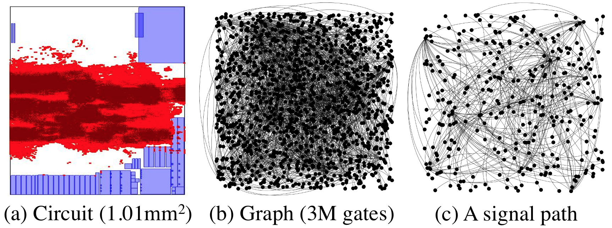

Static Timing Analysis
We have applied Taskflow to solve a real-world VLSI static timing analysis problem that incorporates hundreds of millions of tasks and dependencies. The goal is to analyze the timing behavior of a design.
OpenTimer: A High-performance Timing Analysis Tool
Static timing analysis (STA) is an important step in the overall chip design flow. It verifies the static behavior of a circuit design and ensure its correct functionality under the given clock speed. However, efficient parallel timing analysis is extremely challenging to design and implement, due to large irregularity and graph-oriented computing. The following figure shows an extracted timing graph from an industrial design.
We consider our research project OpenTimer, an open-source static timing analyzer that has been used in many industrial and academic projects. The first release v1 in 2015 implemented the pipeline-based levelization algorithm using the OpenMP 4.5 task dependency clause. To overcome the performance bottleneck caused by pipeline, we rewrote the core incremental timing engine using Taskflow in the second release v2.
Programming Effort
The table below measures the software costs of two OpenTimer versions using the Linux tool SLOCCount. In OpenTimer v2, a large amount of exhaustive OpenMP dependency clauses that were used to carry out task dependencies are now replaced with only a few lines of flexible Taskflow code (9123 vs 4482). The maximum cyclomatic complexity in a single function is reduced from 58 to 20, due to Taskflow's programmability.
| Tool | Task Model | Lines of Code | Cyclomatic Complexity | Cost |
|---|---|---|---|---|
| OpenTimer v1 | OpenMP 4.5 | 9123 | 58 | $275,287 |
| OpenTimer v2 | Taskflow | 4482 | 20 | $130,523 |
OpenTimer v1 relied on a pipeline data structure to adtop loop parallelism with OpenMP. We found it very difficult to go beyond this paradigm because of the insufficient support for dynamic dependencies in OpenMP. With Taskflow in place, we can break this bottleneck and easily model both static and dynamic task dependencies at programming time and runtime. The task dependency graph flows computations naturally with the timing graph, providing improved asynchrony and performance. The following figure shows a task graph to carry one iteration of timing update.
Performance Improvement
We compare the performance between OpenTimer v1 and v2. We evaluated the runtime versus incremental iterations under 16 CPUs on two industrial circuit designs tv80 (5.3K gates and 5.3K nets) and vga_lcd (139.5K gates and 139.6K nets) with 45nm NanGate cell libraris. Each incremental iteration refers a design modification followed by a timing query to trigger a timing update. In v1, this includes the time to reconstruct the data structure required by OpenMP to alter the task dependencies. In v2, this includes the time to create and launch a new task dependency graph

The scalability of Taskflow is shown in the Figure below. We used two million-scale designs, netcard (1.4M gates) and leon3mp (1.2M gates) to evaluate the runtime of v1 and v2 across different number of CPUs. There are two important observations. First, v2 is slightly slower than v1 at one CPU (3-4%), where all OpenMP's constructs are literally disabled. This shows the graph overhead of Taskflow; yet it is negligible. Second, v2 is consistently faster than v1 regardless of CPU numbers except one. This highlights that Taskflow's programming model largely improves the design of a parallel VLSI timing engine that would otherwise not be possible with OpenMP.

Conclusion
Programming models matter. Different models give different implementations. The parallel code sections may run fast, yet the data structures to support a parallel decomposition strategy may outweigh its parallelism benefits. In OpenTimer v1, loop-based OpenMP code is very fast. But it's too costly to maintain the pipeline data structure over iterations.
References
- Tsung-Wei Huang, Guannan Guo, Chun-Xun Lin, and Martin Wong, "OpenTimer v2: A New Parallel Incremental Timing Analysis Engine," IEEE Transactions on Computer-Aided Design of Integrated Circuits and Systems (TCAD), vol. 40, no. 4, pp. 776-786, April 2021
- Tsung-Wei Huang, Chun-Xun Lin, Guannan Guo, and Martin Wong, "Cpp-Taskflow: Fast Task-based Parallel Programming using Modern C++," IEEE International Parallel and Distributed Processing Symposium (IPDPS), pp. 974-983, Rio de Janeiro, Brazil, 2019.
- Tsung-Wei Huang and Martin Wong, "OpenTimer: A High-Performance Timing Analysis Tool," IEEE/ACM International Conference on Computer-Aided Design (ICCAD), pp. 895-902, Austin, TX, 2015.